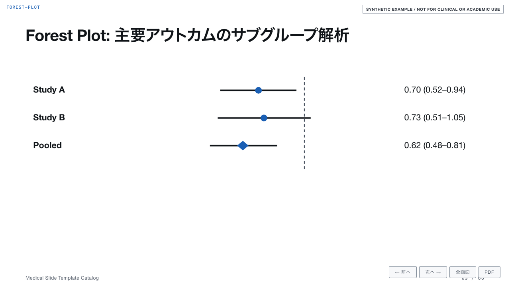
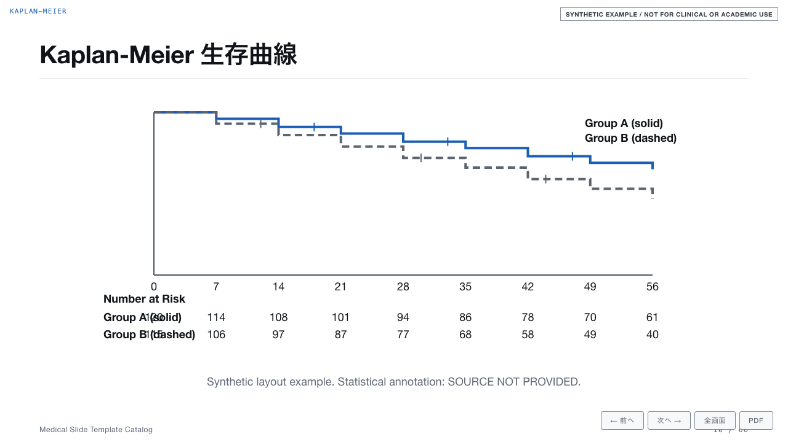
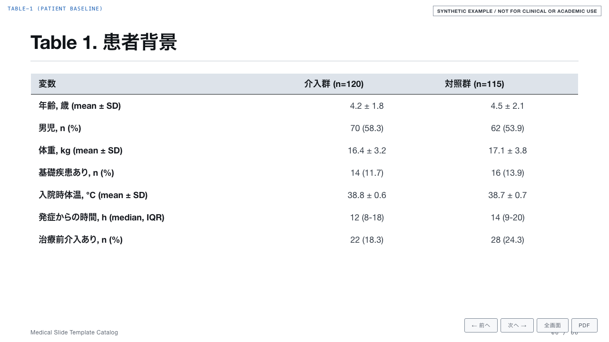
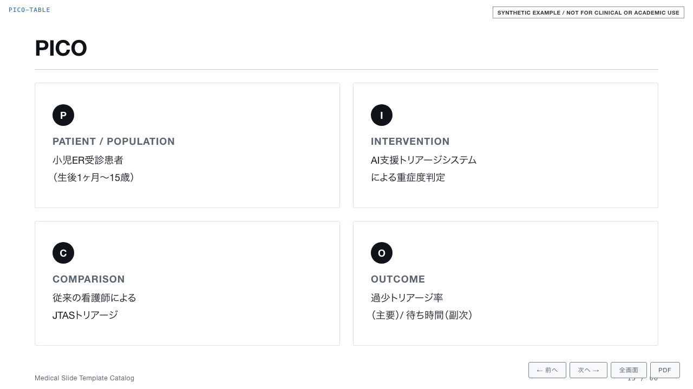
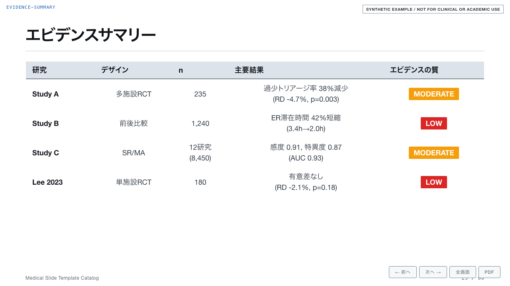

How it works
論文、アブストラクト、メモ、表、CSV を渡して、どんな発表かを伝えます。発表形式・言語・聴衆・時間は Skill が判断します。
PHI、引用、統計、画像権利、COI、倫理の項目を検査。検証できないものは
SOURCE NOT PROVIDED
のまま残り、最終状態をブロックします。
同梱の localhost サーバーでブラウザ発表するか、1スライド1ページの PDF に印刷。どの時点でもインターネットは不要です。
Use cases
PICO を先に固定し、効果推定値は区間とともに読む。原資料がない確実性は「未評価」のまま明示されます。
決定論的チャートは、検証済みの1つのデータオブジェクトから幾何とラベルを導出します。手配置の数値はありません。
選択コンポーネントはキーボード操作可能で印刷安全。PHI の懸念があれば、議論ではなくビルドを停止します。
アルゴリズム、チェックリスト、クイズスライド。回答状態は色なしでも明示されます。
Verified, not claimed
Live demo
カタログと実例デッキはすべて合成データで、恒久的なマーカー付きです。構造と安全動作を示すものであり、医学的推奨ではありません。
Safety gate
このプロジェクトは医療者向けの学術・教育プレゼンテーションを作るものです。患者向け資料、診断、治療選択、臨床意思決定支援ではありません。
| ゲート | 動作 |
|---|---|
| PHI | 患者識別情報の可能性がある場合（DICOM メタデータや画像への焼き込みを含む）、修正または匿名化された入力を求めて停止します。 |
| 引用 | 引用、DOI、PMID、ガイドライン版が検証できない場合、最終状態をブロックします。文献を捏造しません。 |
| 数値 | 分母、パーセント、単位、信頼区間、p 値、フロー合計の矛盾をプレビュー前に検出します。 |
| COI・倫理 |
COI
を既定で「なし」、倫理を既定で「承認済み」にしません。未回答の必須項目は
未確認 /
SOURCE NOT PROVIDED のまま残ります。
|
| 画像 | 来歴、ライセンス、同意、許可が不明な画像は使用しません。 |
| 合成コンテンツ | カタログと実例の全スライドに恒久的な可視マーカーがあり、エビデンスとして再利用できません。 |
Install
git clone https://github.com/kgraph57/medical-slide-templates.git cd medical-slide-templates
node scripts/install-skill.mjs --dest "$HOME/.claude/skills/medical-slide"
# このRCT論文を、15分の日本語抄読会スライドにして。 # この匿名化メモから10分の英語症例カンファレンスデッキを作って。
Gallery




